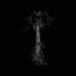
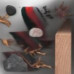
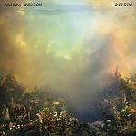
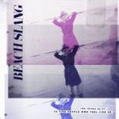
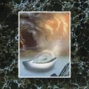
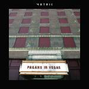

Music Reviews
-

Oneohtrix Point Never Garden of Delete
Garden of Delete is Daniel Lopatin’s latest attempt at trying to find a middle ground between creation and annihilation, interconnecting a series of disjointed elements that offer up a reflection on media consumption in the digital era.
Juan Edgardo Rodríguez reviews... -

Jamie Woon Making Time
Jamie Woon's second LP is a meticulously crafted, refined exhibition of velvety work, dressed immaculately in syrupy neo-soul.
Carl Purvis has dimmed the lights... -

Joanna Newsom Divers
Joanna Newsom returns after five years with an album significantly shorter but no less demanding than the gargantuan triple-album Have One On Me.
Forrest Cardamenis holds his breath... -

Beach Slang The Things We Do to Find People Who Feel Like Us
The Philadelphia foursome's debut effort is rife with spry, anthemic scorchers that triumph with ragged, open-hearted emotion.
Juan Edgardo Rodríguez reviews... -
Majical Cloudz Are You Alone?
Are You Alone is about self-rehabilitation as much as it is about calm introspection, an absorbing and deeply personal listen that gives singer-songwriter Devon Welsh the chance to reassure himself that solitude only exists relative to its opposite.
Juan Edgardo Rodríguez reviews... -

The Libertines Anthems For Doomed Youth
With their first album in over a decade, can The Libertines recapture that lightning in a bottle that made them one of the most exciting bands of the early 21st Century?
Joe Rivers finds some of us have aged better than others... -
Girl Band Holding Hands With Jamie
File Girl Band under “_______” and just enjoy the volume.
Sean Caldwell reviews... -
Battles La Di Da Di
Battles' third record, their first as an instrumental band, has elements of their sense of invention, but is marred by unseemly structural decisions.
Stephen Wragg reviews... -

Wand 1000 Days
Wand drop their 3rd LP, only 13 months after dropping the first. 1000 Days is an impulsively progressive garage record, and a reasonably well-organized mess. If they remain as prolific as they have been for the last year, we might even have another LP in the New Year...
Carl Purvis thinks he's getting it... -

Metric Pagans in Vegas
Metric's follow-up to 2012's Synthetica shows a disappointing decline away from heart-pounding dance-pop and into robotic, uninspired electronica peppered with some vestiges of the band's former glory.
Gabbie Nirenburg reviews...